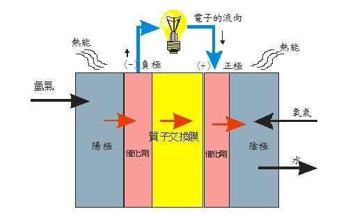
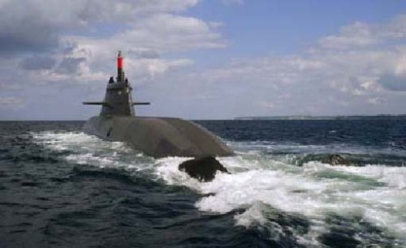
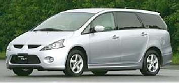
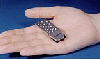
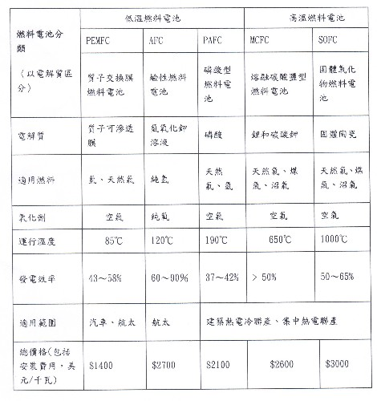

燃料電池 江銘輝 五夢網
一、前言
雖然170多年（1839年）前，英國一位律師、物理學家--葛羅夫（Sir William Grove）就利用氫氣與氧氣從酸性電解質的反應中產生直流電流，發明了燃料電池（Fuel Cell），但由於不符合經濟效應，一直沒有推廣。直到20世紀60年代，由於太空飛天行和國防的需要，才開始再發展，應用於太空飛行和潛水艇。近年來，由於能源的匱乏和環境保護，由於燃料電池具有高效率、零污染、低噪音開始受到世界各國的普遍重視。
二、燃料電池的發展的里程碑
燃料電池的發展主要有下列階段
• 1839年英國William Grove發明燃料電池，用它點亮倫敦講演廳。
• 1889年Mood和Langer使用燃料電池這個名詞
• 1959年首部燃料電池汽車問世。
• 1965年美國雙子星5號和1970阿波羅太空船上應用燃料電池。
• 1991年美國建立200kW商業燃料電池發電廠。
三、燃料電池的特性分析
燃料電池有其他電池沒有的特性，我們歸類如下：
• 燃料電池是第三類電池：
一次電池，又稱原電池，即不能再充電的電池，用完就丟棄如鋅錳乾電池，鋰原電池等。
二次電池是須充電的蓄電池，如鉛酸蓄電池。
燃料電池既不是一次電池，也不屬二次電池，我們估且稱它為第三類電池。
• 燃料電池是化學電池：
化學電池〈碱性電池、鉛蓄電池、燃料電池〉，物理電池：〈太陽能電池〉。
• 燃料電池是第四種發電設備：
傳統發電廠有水力、核能、火力，燃料電池是最有潛力的家庭或社區型無電力網的發電設備。
• 燃料電池高效率、低污染、低噪音。
四、燃料電池原理
1.一般原理：如圖，燃料電池含陰陽兩個電極，分別充滿電解液，兩個電極間夾有滲透性的薄 膜。氫氣由陽極進入，氧氣（或空氣）則由陰極進入。陽極的氫經催化劑的作用分解成兩個氫質子與兩個電子，質子穿透薄膜到陰極，電子則經由外電路到達陰極。在陰極催化劑作用下，氫質子、氧及電子作用形成水分子排放出去。

圖1：燃料電池原理
2.甲醇燃料電池原理
陽極： CH3OH + H2O → CO2 + 6H+ + 6e-
陰極： 3/2 O2 + 6H+ + 6e- →3 H2O
全反應： CH3 OH + 3/2 O2 → CO2 + 2H2O
圖2：甲醇燃料電池原理
如圖2，甲醇燃料電池的原理是利用質子交換膜技術，直接以氣態或液態的甲醇為燃料，甲醇在陽極轉化成碳和氫，同一般的質子交換膜燃料電池一樣，氫再與氧反應。電極及電池反應如下：
陽極： CH3OH + H2O → CO2 + 6H+ + 6e-
陰極： 3/2 O2 + 6H+ + 6e- →3 H2O
全反應： CH3 OH + 3/2 O2 → CO2 + 2H2O
總反應相當於甲醇燃燒生成CO2和H2O，反應的可逆電動勢為1.183V，與氫氧燃料反應的可逆電動勢（1.23V）相近。
由CH3OH陽極電化學氧化方程可知，每消耗1mol甲醇，同時也需1mol的水參與與反應。
五、應用
1.燃料電池的應用範圍上至太空船，下至潛艇；小到手機、筆記型本電腦，大到汽車的動力，或社區、醫院及家庭的發電設備，前景十分廣闊。
• 攜帶式燃料電池 ：
筆記型電腦、數位相機、手機、小型音響
• 固定式燃料電池：
住宅、社區、大樓、醫院等發電設備
• 移動式燃料電池：
運輸交通工具─汽車、太空船、潛艇等。
2. 未來發展
(1)攜帶式燃料電池
• 美國Medis科技公司已開發一款當作充電器的燃料電池。2006年 夏季準備向手機市場進軍價格將定為10美元～15美元之間。
• 根據2005年10月26日東京 Big Sight國際展覽會的探討：2007年在飛機上携帶液體燃料的限制將會放寬，用於手機和音響功率爲1W的小型燃料電池將問市。從2008年開始將進入量産階段，市場逐步形成。
(2)移動式燃料電池
- 舊金山市目前有90輛氫電車行駛，全市共有16個加氫站。到2005年底加氫站將擴大到27個，到2010年將達到50個。按計劃，到2007年，該協會將在舊金山和洛杉磯兩個大城市中推出300輛氫電汽車和公交車投入日常使用。
- 美國燃料電池理事會（USFCC）預測到2010年，燃料電池汽車的市場占有率將達到2.7%-4.3%，因此，大概有60萬到120萬的燃料電池汽車。
(3)固定型燃料電池
加州燃料電池諮詢公司波利丁（Polydyne) 執行長彼得·伯斯預言2006至2010年間有1%的美國家庭使用燃料電池；那時，一台5千瓦功率的機器要7000美元。再過幾年，價格會降至1200美元，走入一半的美國家庭。更大膽的預測到2031年，美國將有99%的家庭用電不再需要與輸電網連接。
(4) 範例（本文圖檔取自各廠商，如有不便，敬請原諒）

圖001：使用燃料電池的德國212型U31潛艇（2003年試驗）

圖002：2005年出廠三菱燃燃料汽車

圖003：東芝推出了小型攜帶電子儀器的燃料電池。重量只有8.5公克甲醇燃料。
圖004：LG的燃料電池（可供電10小時）
圖005：1998年安裝在柏林的250kW的燃料電池電廠
六、 燃料電池市場
1.分析（參考圖001至005）
美國Allied Business Intelligence(ABI) 公司最新發表的研究報告指出，2004年全球燃料電池市場規模還微不足道，以保守估計在2013年銷售市場成長到186億美元，但若是美國、歐洲和日本這三地區能增進汽車燃料電池技術改進，大膽預測在2013年銷售市場成長到350億美元。主要來自三大應用領域：汽車，固定式發電(Stationary) 和便攜式電子產品。
2.燃料電池按電解質種類區分可分為五大類 ：
燃料電池有許多分類方法：以燃料的型態分，可分為氣態（如氫燃料電池）和液態（如甲醇燃料電池）。以工作溫度分又可分為低溫（＜200℃）、中溫（200～750℃）和高溫（＞750℃）。按電解質種類分，又可分為鹼型(Alkaline Fuel Cell, AFC)、磷酸型(Phosphoric Acid Fuel Cell, PAFC)、熔融碳酸鹽型(Molten Carbonate Fuel Cell, MCFC)、固體氧化物型(Solid Oxide Fuel Cell, SOFC)和高分子膜（Solid Polymer Electrolyte Fuel Cell, SPEFC)五類。
有關燃料電池的種類與用途，請參考下表（燃料電池分類及其主要特性）
表：燃料電池分類及其主要特性

七、結論〈21世紀能源之星〉
燃料電池具有高效率、低污染、無噪音的特點。是21世紀能源明日之星，各國 正在大力開發這種新型發電技術。美國Allied Business Intelligence (ABI) 公司預測在2013年市場將成長到350億美元，下列是它的競爭優勢
‧使用在手機、筆記型電腦等之攜帶式電池
高能量密度、無需充
‧住宅、社區、醫院等之固定型發電設備：
無噪音、低污染、無需輸變電設施
‧汽車、潛水艇等移動式電池：
無污染、無噪音、續航力強